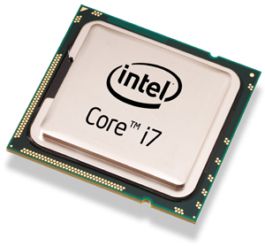

Intel Core i3, i5 or i7?
The Processor is your computers engine. It is important to know how much processing power you will need for the programs you intend to use. In this article we will go over the basics of choosing what and why.
Intel-processors
Intel processors come in 3 different categories these days. In the low-end you will find the Celeron models. At midrange we have the Pentium models, which was once in the high range.
Today however, the best series are the Core-models. There are hundreds of Core models, but the 3 most popular and widely known today are the i3’s, i5’s and i7’s, where i3 of course, is in the low-end and i7 the high-end.
There’s also the Xeon models, but let’s not make thinks more complicated, since they are often used for servers, or commercial workstations.
The 2016 Core models were called Skylake, or the 6000 series, e.g. “Intel Core i5 6600”. This year’s model is called Kaby Lake, or the 7000 series. See a pattern? They jump a 1000 with each generation of new models. Today’s top model would be the Intel Core i7 7700K. Why K? We’ll get to that later on.
Cores and Hyperthreading
If you are building a new pc or replacing your old processor, you’ll first have to figure out which socket your motherboard uses. When you’ve figured that out, you’ll need to choose how much power you want.
If you are just browsing the web, writing a couple of assignments and maybe some light gaming, the i3 will do just fine. If you want to run heavier programs such as photoshop, or maybe triple A games, the i5 would be a better choice, since it has 4 actual processing-cores, whereas the i3 only has 2.
The i3 however, has hyperthreading, which means that those 2 cores in practice, amounts to the power of 4. But remember, that actual cores are always better than hyperthreading.
So why choose an i7 over the i5? Yep, it’s the hyperthreading again.
An i7 has the same number of actual cores, as the i5, but hyperthreading gives it the power of 8. 2 years ago, the only people who would need the i7 over the i5, were people doing heavy multitasking, like streaming whilst playing games, or rendering movies or pictures in the background. If you're' a gamer, that tiny upgrade wouldn’t give any measurable difference.
Today is another story. Since games are becoming more sophisticated, and starting to utilize the hyperthreading that the i7 offers, it can be worth it to spend those extra 100£.
GHz and K-models
All processors have a GHz number written on them. And it means how many Giga Hertz the individual core can produce. E.g. an i5 7600 3.5 GHz has 4x3.5 GHz.
If a core has 3.5 GHz it means that it has 3.5 billion opportunities to manipulate bits within a second.
A K-model means that it can be overclocked to extend its GHz. E.g. an i7 7700K has a base frequency of 4.2 GHz but can be overclocked to about 5.2 GHz. That’s a billion more a second, and obviously means a more effective processing-core.
If you want to overclock your K-model however, remember to research how much more power and cooling you will need. An i7 7700K at its base frequency doesn’t produce more heat than a standard cooling fan can handle.
If you overclock it, there is no doubt that you should provide equivalent cooling for it. Either a bigger fan, or consider water cooling, which provides a more reliable and constant cooling flow.
| Model | No. of Cores | Hyper- threading | Base Frequency Range | Cache |
|---|---|---|---|---|
| i3 | 2 | Yes | 3.4-4.2 GHz | 3-4 MB |
| i5 | 4 | No | 2.4-3.8 GHz | 6 MB |
| i7 | 4 | Yes | 2.9-4.2 GHz | 8 MB |